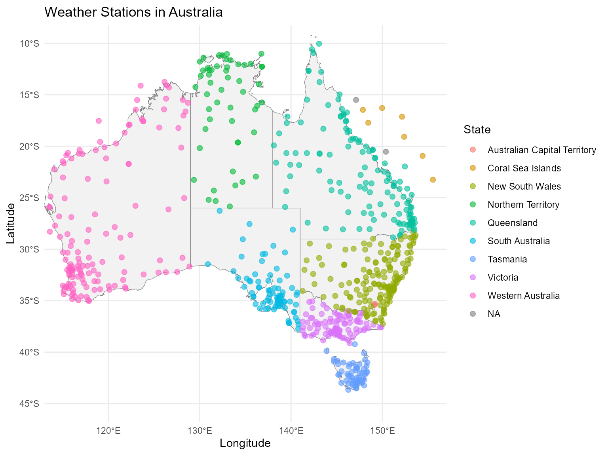

We are using GSODR package to download weather Stations
data(location).
# save data
usethis::use_data(weather_stations, overwrite = TRUE)The count of Weather Stations in each State
| stn_state | n |
|---|---|
| New South Wales | 171 |
| Western Australia | 140 |
| Queensland | 127 |
| Victoria | 95 |
| South Australia | 80 |
| Tasmania | 56 |
| Northern Territory | 52 |
| Coral Sea Islands | 7 |
| Australian Capital Territory | 2 |
| NA | 2 |
# print head of data
head(weather_stations, n = 3) |> kable()| stnid | stname | stn_lat | stn_lon | address | stn_city | stn_state |
|---|---|---|---|---|---|---|
| 941000-99999 | KALUMBURU | -14.300 | 126.633 | Drysdale River, Shire Of Wyndham-East Kimberley, Western Australia, 6740, Australia | Drysdale River | Western Australia |
| 941020-99999 | TROUGHTON ISLAND | -13.750 | 126.150 | Troughton Island Airport, Shire Of Wyndham-East Kimberley, Western Australia, Australia | Troughton Island Airport | Western Australia |
| 941030-99999 | BROWSE ISLAND AWS | -14.117 | 123.533 | Shire Of Wyndham-East Kimberley, Western Australia, Australia | Shire Of Wyndham-East Kimberley | Western Australia |
